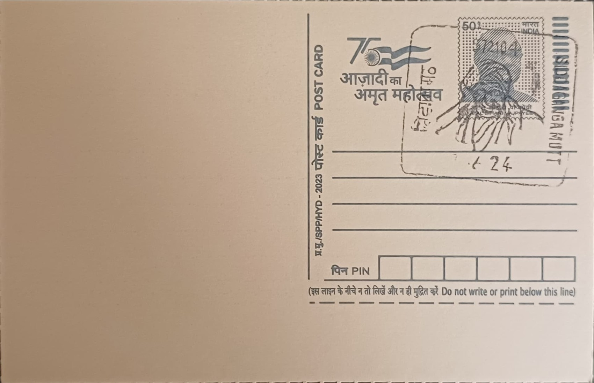

His Holiness Sri Sivakumara Mahaswamiji
ಪರಮಪೂಜ್ಯ ಶ್ರೀ ಶಿವಕುಮಾರ ಮಹಾಸ್ವಾಮೀಜಿ


The Siddaganga Math itself traces its origins to the fifteenth century, when it was established near present-day Tumakuru by Sri Gosala Siddeshwara Swami, one in a line of Veerashaiva-Lingayat ascetics revered as Shivayogi Siddapurushas. It was into this centuries-old monastic lineage, rather than as its founder, that the man born Shivanna in 1907 in Veerapura village, Ramanagara district, would eventually rise to become its most celebrated pontiff, assuming the religious name Shivakumara Swami upon entering the math's order of mendicant monks (virakta) on 3 March 1930, shortly after completing a bachelor's degree in arts at Central College, Bangalore.
Within Lingayat religious and social life, the position he came to hold as head seer, or pontiff, of Siddaganga Math from 1941 onward placed him at the helm of one of Karnataka's most influential monastic institutions, one whose authority rested less on ritual precedence than on its sustained practice of vidya dasoha, the offering of free education, food, and shelter to students regardless of background. This ethic had been formalized earlier in the math's history, in 1917, when a predecessor seer started a Sanskrit gurukula open to children of all castes and faiths, a model that Shivakumara Swami expanded dramatically over his six-decade tenure into a network reaching tens of thousands of pupils, a record of service that led the Government of India to confer upon him the Padma Bhushan in 2015.
Under his direct stewardship, the math grew from a modest residential school into the Sri Siddaganga Education Society, an umbrella eventually encompassing some 132 separate institutions ranging from nursery and primary schools to pre-university colleges and institutes of engineering, science, arts, management, and vocational training. He personally oversaw the daily feeding and housing of thousands of boarding students at the Tumakuru campus at a time, funded through donations and the math's own agricultural and institutional revenues, while continuing to perform his religious duties as pontiff, a dual role of spiritual authority and hands-on educational administration that was unusual in scale even among comparable Karnataka mathas of the period.
A defining, often-recounted feature of his public life was his austere personal routine, reportedly rising before dawn each day into his final years to participate in the physical running of the institution, from inspecting kitchens to attending to students, which reinforced the popular epithet Nadedaaduva Devaru, or walking god, bestowed on him by devotees across the state. His death on 21 January 2019, at the age of 111, made him one of the longest-lived religious leaders anywhere to have remained in active charge of an institution until the end, and it drew an extraordinary public response, with the state government declaring mourning and lakhs of people, including senior political leaders cutting across party lines, converging on Tumakuru for his funeral rites.
Following his death, leadership of the math passed to his designated successor, Sri Siddalinga Swami, who has continued to administer the Sri Siddaganga Education Society and its affiliated colleges and schools from the same Tumakuru campus where Shivakumara Swami lived and worked for nearly nine decades. The math's free hostel and feeding program, still central to its identity, continues to serve resident students drawn from across Karnataka and neighbouring states, with the institution's annual Siddaganga Jathra and founder's-day observances now doubling as occasions to commemorate his life. The post office named for the math, serving Tumakuru district under PIN 572104, stands as the administrative marker of a campus that today functions much as it did under him, as a working school and monastery rather than a memorial site alone.
| Date of Introduction | February 21, 2020 |
|---|---|
| Address | Sub Postmaster, |
| Siddaganga Mutt SO, | |
| Tumakuru (dt.), Karnataka - 572104. |